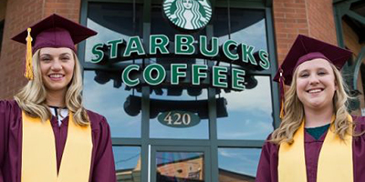
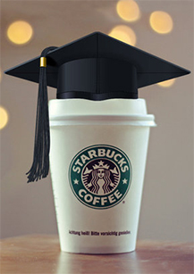
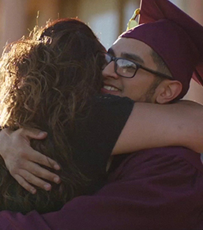
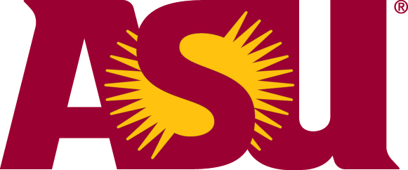
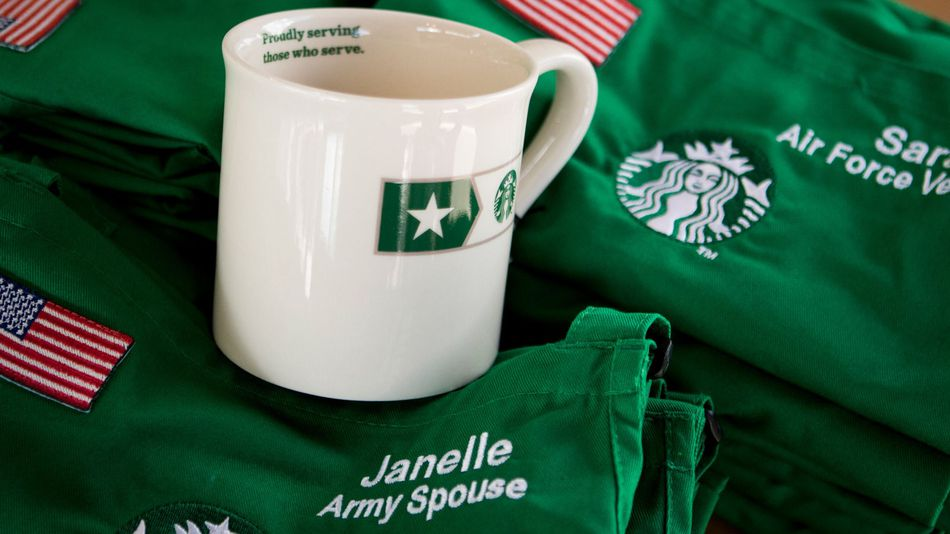

THE STARBUCKS FOUNDATION
COLLEGE
If earning a degree is one of your dreams, we can help you get there. We know more than 70% of our U.S. partners (employees) are students or aspiring students. We want to help. Supporting our partners’ ambitions is the very best investment Starbucks can make. In a first of its kind collaboration with Arizona State University, we’re offering all part- and full-time benefits eligible U.S. partners full tuition coverage for every year of college to earn a bachelor’s degree. Partners receive support from a dedicated team of coaches and advisors, 24/7 tutoring on a variety of subjects, and a choice of more than 50 undergraduate degrees through ASU's research driven and top-ranked program, delivered online.

Our College Achievement Plan

Starbucks and ASU believe that you deserve the opportunity to pursue your education. No matter your dream, no matter your goal, we are invested in you. The Starbucks College Achievement Plan will help you create your bright future. At ASU, you are part of an inclusive community of learners taking part in a new gold standard for online education. With access to leading educational technology and benefits like full tuition reimbursement and personalized financial aid counseling, Starbucks partners are set up for success.
The Starbucks College Achievement Plan is just one way we’re committed to the success of our partners. From growing as a person, as a partner, in your career and in your community – the opportunity is here for you to shape and make your own. That’s why when you launch a career inspired by human connection and the opportunity to become your personal best, the possibilities are endless.

Attend Arizona State University

Arizona State University is a comprehensive public research university, measured not by whom we exclude, but rather by whom we include and how they succeed; advancing research and discovery of public value; and assuming fundamental responsibility for the economic, social, cultural and overall health of the communities it serves.
College Opportunities for Military Families

Our military service member and veteran partners can now help a family member realize their dreams of pursuing a college education. To show our gratitude for their service, they can extend an additional Starbucks College Achievement Plan benefit to their spouse, domestic partner, or child. The participating family member will receive all the same benefits as our partners in the program.